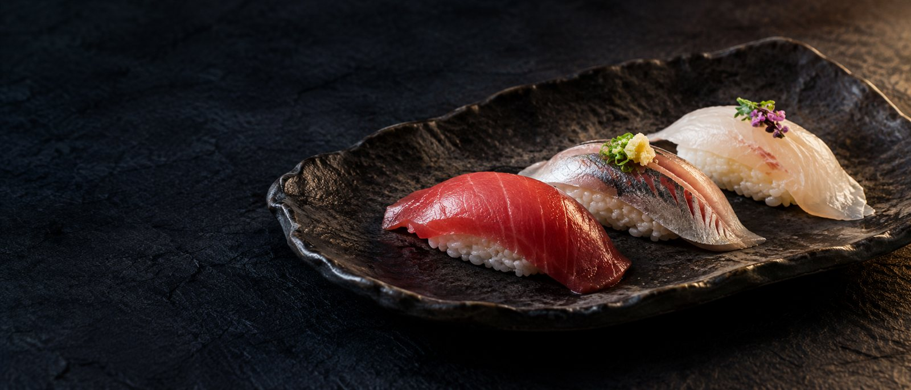
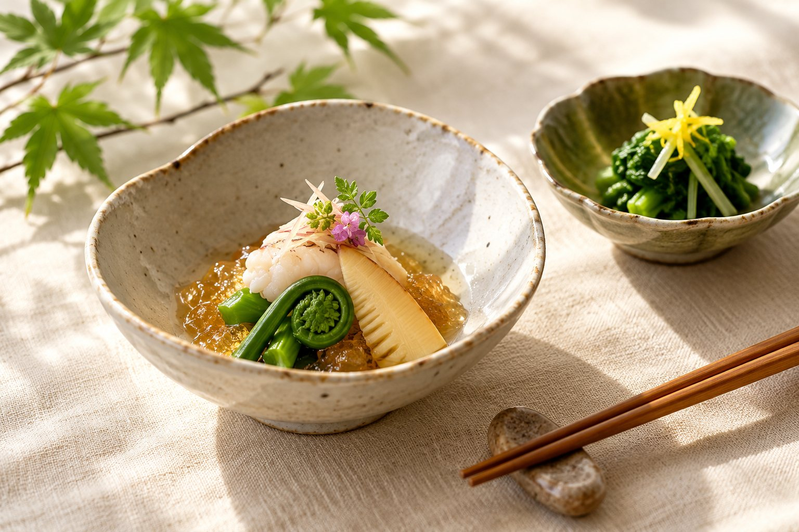
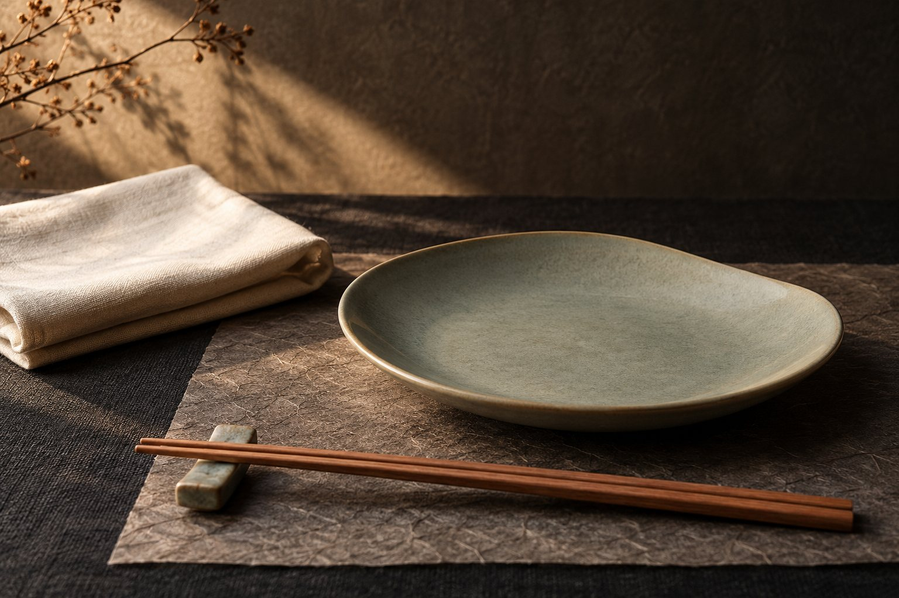

素材に合わせた仕事
素材ごとに仕込み方を変え、持ち味を引き出す工夫を重ねています。

YAMAGATA · TOKAMACHI
AI生成イメージ／実際の提供料理とは異なります
ご予約・お問い合わせ023-631-9559
火〜金 17:30〜21:00 ／ 日曜・月曜 定休
01 — ABOUT ISHIYAMA SUSHI
山形市十日町にある石山寿司は、江戸前の寿司と季節のお料理を提供しています。カウンターで職人の仕事を眺めたり、暖簾で仕切られた半個室で会話を愉しんだり。お食事の目的に合わせたお席をご相談いただけます。
素材ごとに仕込み方を変え、持ち味を引き出す工夫を重ねています。
大将のおまかせコースでは、季節のお料理、お寿司、椀物などをいただけます。
上喜元や東北泉などの日本酒も用意されています。お食事に合わせてご相談ください。
店舗についてのご案内は、公式サイトの掲載情報に基づいています。
02 — OMAKASE
はじめての方にも、お料理と寿司をひと通り。

季節のお料理と寿司を組み合わせたコースです。
具体的な内容は、ご予約時にお確かめください。
12,000円／お一人様・税込
予約ページで確認する04 — OCCASIONS
カウンターは6席。目の前で行われる仕込みや握りの仕事も、お食事の愉しみに。
暖簾で仕切る半個室や小上りもあります。人数やお席は事前にご相談ください。
山形の日本酒をはじめ、お酒もご用意。料理と合わせてゆっくり味わえます。
持ち帰り用の寿司も案内されています。商品・料金・受取時間はお電話でご確認ください。
05 — THE MOOD
寿司の時間を表現した、二つのイメージ。

06 — INFORMATION & ACCESS
建物名・階数は今回の公式情報では確認できなかったため、省略しています。
店舗情報確認日：2026年10月22日。営業時間・メニュー等は変更になる場合があります。最新情報は公式サイトまたはお電話でご確認ください。
RESERVATIONS
ご予約は、店舗のオンライン予約ページまたはお電話から。
当日のご相談・季節の鍋料理はお電話でお問い合わせください。